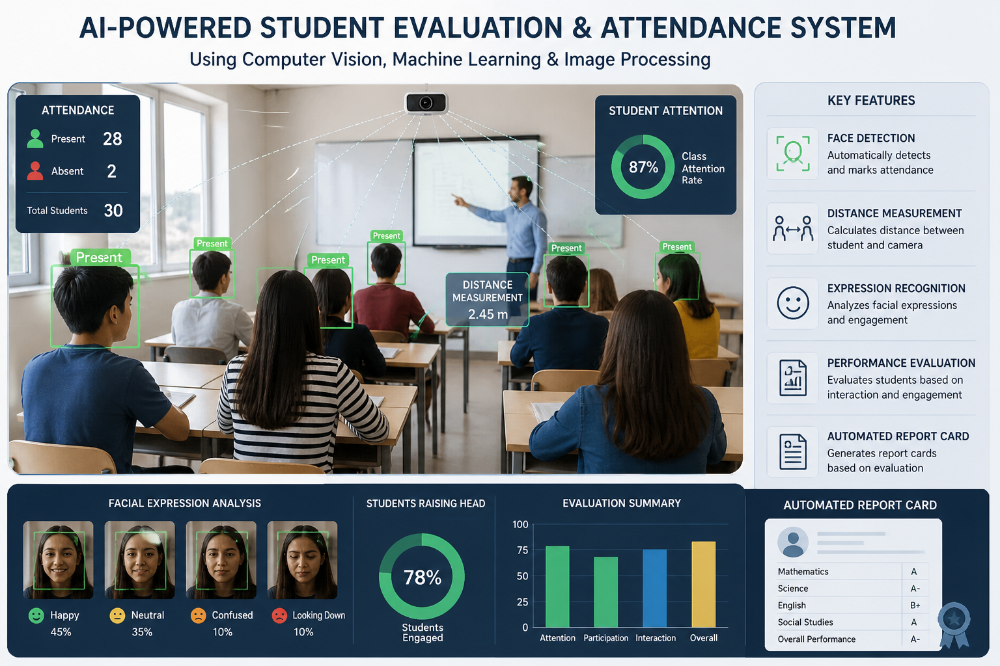

Hiii, I'm
Meghana Paladi Shekar
A Data & AI professional based in Skåne, Sweden, passionate about leveraging data, technology, artificial and super intelligence, and emerging concepts in modern tools and techniques to solve complex real-world problems. My multidisciplinary background spans data analytics, AI, machine learning, software development, testing, automation, and business problem-solving, allowing me to contribute across the full lifecycle of data-driven and technology-enabled solutions. With a strong analytical mindset and a focus on continuous learning, experimentation, and innovation, I enjoy designing, developing, testing, evaluating, and continuously improving data-driven solutions that are technically robust, practical, and aligned with real business needs.
Professional Summary
I am a Data & AI professional with a Master's degree in Data Analytics and Business Economics from Lund University, combining technical expertise with strong business and quantitative problem-solving skills. My expertise spans data analytics, artificial intelligence, machine learning, deep learning, NLP, LLMs, data engineering, ETL, predictive modelling, and business intelligence. I enjoy transforming complex data into clear insights, intelligent solutions, and measurable business value.
My professional experience spans AI, machine learning, data engineering, automation, analytics, and business decision support. During my Master's thesis, I developed an AI-powered chemical intelligence pipeline integrating LLMs, NLP, machine learning, PostgreSQL, ETL, and human-in-the-loop validation for a real-world regulatory application. At LG Soft, I worked with automation, system validation, telemetry and CAN bus data in agile engineering environments. At Mu Sigma, I worked on employee attrition and customer churn analytics, developed Power BI dashboards, and translated analytical findings into actionable business insights.
Having completed my Master's degree in Sweden, I am highly motivated to build my long-term career in Sweden and contribute to its innovative, technology-driven and data-oriented business environment. I am seeking opportunities where I can combine Data & AI, analytics, business understanding, and strategic problem-solving to address meaningful business challenges, improve decision-making, drive operational efficiency, and create sustainable business value.
Skills
Programming Languages
Data & ML
Tools and Technologies
Visualization Tools
Data Engineer
Cloud and platforms
Methodologies
Soft Skills
AI Skills
Experience
Machine Learning Intern - ChemALLM : A Framework for Chemical Enttiy Extraction and Semantic Database Updating (Master's Thesis)
GPC Lund, Sweden
March 2026 - June 2026I have worked on building scalable data pipelines that take messy, complex datasets and turn them into something meaningful and useful for decision-making and useful insights. One of the key things I’ve worked on is designing a human-in-the-loop LLM-powered data preprocessing system. It combines machine learning, NLP, deep learning, and rule-based approaches to automate tasks like data cleaning, schema alignment, and querying. In simple terms, the main focus was on making data workflows smoother and more reliable end-to-end—so the data is cleaner, the insights are more accurate, and everything runs more efficiently.
Automation Test Engineer, Nissan
LG Soft India
March 2024 – October 2024Worked with In-Vehicle Infotainment systems (IVI) of Nissan's EU and DA2. Developed end-to-end automation scripts to mock vehicle validation which had achieved 98% test coverage and reduced manual work to drive operational excellence. Gained experience in modules like Transversal HMI, Buttons, User Profile, Phone projection, Media, EV and energy consumption. Built Infotainment application in Testpresso Workstation, ATS server and client, Jira, VS base server, Code Beamer, CAN bus, Agile process and Scrum.
Trainee Decision Scientist
Mu Sigma
August 2023 - Feburary 2024Developed end-to-end solution for a classification problem, "Employee Attrition" to find an optimal model for HR department for the analysis of cost transformation on employees, and the product was delivered by Power BI dashboard describing various correlations be tween data points. Gained experience in data pre-processing, EDA, data modeling, data evaluation, data validating by working on "Customer churn prediction" project which focused on gaining customer insight for improving service-strategies.
Projects

Greenhouse Farming using IOT
Article Id. IJCTT-V69I9P101
DOI
The Internet of Things consists of objects that have distinctive identities and connected to each other via the web. In other words, monitoring of numerous devices and sensors through the internet. This paper describes the application of the IOT to implement an automatic Greenhouse system. The framework uses a Node MCU board as the main device and all the sensors and devices are connected to it. Using this framework, monitoring of parameters such as pH, temperature, humidity and soil moisture can be done. Here we have created a framework which will gather data by observant periodic conditions of above mentioned parameters. All these activities are a unit and controlled by Arduino uno and Thingspeak.

ChemALLM: A Framework for Chemical Entity Extraction and Semantic Database Updating
Developed an AI-powered chemical intelligence pipeline combining LLMs, domain-specific NER, machine learning, XGBoost, RAG, PostgreSQL, and ETL to automate chemical identification, standardization, enrichment, classification, and validation from noisy real-world datasets. Built a 1M+ compound PostgreSQL knowledge base integrating PubChem, EC Inventory, Norman datasets, and synonym repositories. Implemented a locally deployed, hallucination-controlled RAG architecture using Docker to support data privacy and industrial confidentiality. Evaluated on 30,000 real-world chemical trade records, achieving 90.0% chemical-name identification, 75.9% database enrichment match rate, and zero failed database insertions.

Evaluation of Student Attendance
Paper ID: 20078
Facial Expression Recognition (FER) is a computer vision task that identifies human affective states, cognitive activities, and intentions from facial images. It often leverages the Facial Action Coding System (FACS) to encode facial muscle movements (Action Units). Despite advances in deep learning, FER remains challenging due to expression variability and complexity. In Natural Language Processing (NLP), Sentiment Analysis includes Emotion Recognition and Polarity Detection, which classify emotional labels and determine opinion orientation (positive, negative, neutral) toward a target entity.

Industrial Data Pipeline - ETL & Data Quality
Engineered a modular and reproducible ETL pipeline to ingest, transform, validate, and analyze semi-structured recipe data. Implemented end-to-end data processing including JSON ingestion, schema restructuring, dataset consolidation, missing-value imputation, data-quality validation, ISO 8601 time parsing, outlier detection and IQR-based Winsorization, semi-structured field parsing, and feature engineering. Developed derived analytical metrics such as total cooking time and implemented threshold-based classification for recipe difficulty. Structured the pipeline into reusable Python modules for preprocessing, cleaning, analysis, visualization, and utility functions, incorporating logging and exception handling to improve reliability, maintainability, and scalability. Produced validated analytical outputs and diagnostic visualizations to support exploratory analysis and data-driven decision-making.

Global Socio-Economic and Demographic Analysis
Analyzed 2,560 observations across 26 socio-economic and demographic indicators using World Bank Global Development Indicators data. Conducted exploratory data analysis to uncover regional patterns in economic growth, population dynamics, fertility, mortality, life expectancy, technology adoption, and international trade. Developed multiple visualizations including GDP trend analysis, Sweden’s multidimensional development profile, regional fertility distributions, population trends, mobile penetration vs. health indicators, trade analysis, and GDP–life expectancy–population density comparisons. Derived data-driven insights into global development disparities, demographic transitions, digital adoption, and economic well-being across regions.

Multi-Asset Stock Price Prediction using Deep Learning and Machine Learning
Developed a multi-asset stock price forecasting pipeline using historical Yahoo Finance data for AAPL, MSFT, GOOGL, AMZN, and TSLA. Implemented 60-day sliding-window preprocessing and compared six Machine Learning and Deep Learning approaches: Random Forest, XGBoost, LSTM, GRU, CNN-LSTM, and Attention-LSTM. Evaluated model performance using RMSE, MAE, and MAPE, with GRU achieving the best overall results (RMSE: 9.9561, MAE: 7.2083, MAPE: 4.1377%). Extended the analysis with 20-day rolling volatility to examine market fluctuations and incorporated five-step future forecasting using the best-performing GRU model. The project demonstrates the application of time-series modelling, deep learning, model evaluation, and financial analytics to multi-asset forecasting.